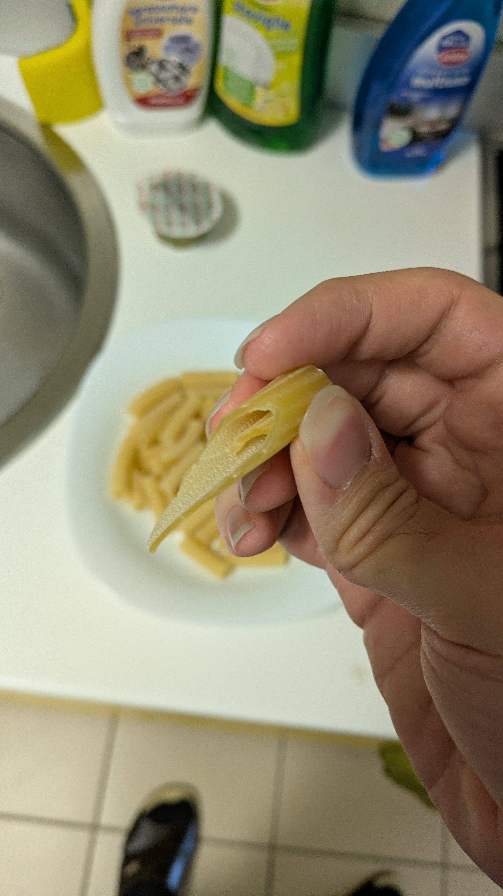

Angelo Verolla
vivi e lascia vivereQuesto è il mio sito personale. Utilizzando la barra in alto, puoi scoprirne di più su chi sono, i miei progetti e i modi per contattarmi (sempre se ne avrai voglia)

si, è proprio un pezzo di pasta che è uscito così dalla confezionequello dietro è il pesto della saclà (non comprarlo, non sa di niente)